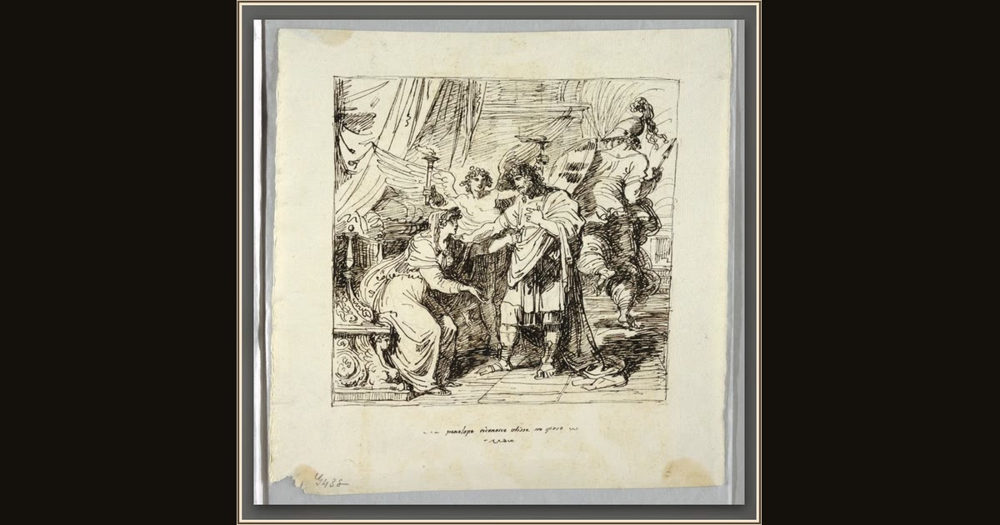

Penelope Recognizes Ulysses
Felice Giani · 1800–1825 · Cooper Hewitt, Smithsonian Design Museum · New York, USA
Giani sketches the happiest moment of the whole story: Penelope's arms flung wide as she finally knows the stranger is her Ulysses. Explore its place in Book XXIII of the Odyssey.